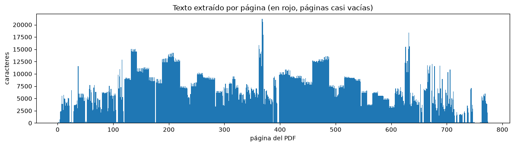
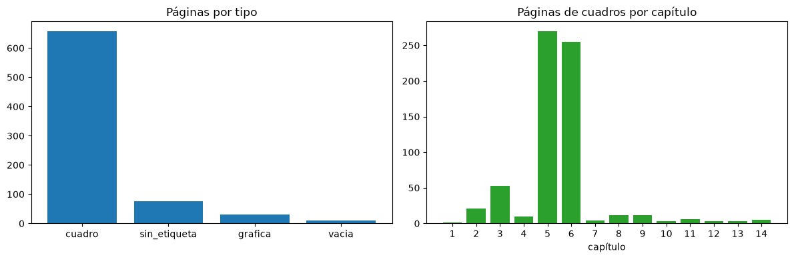
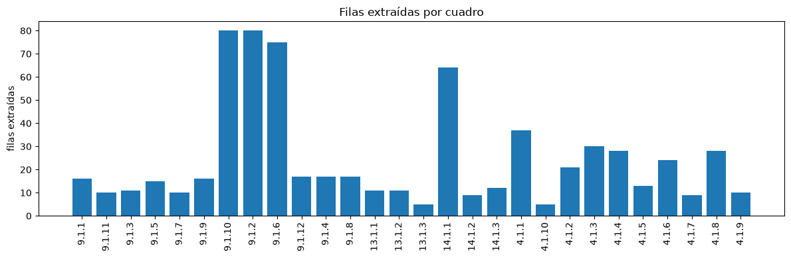
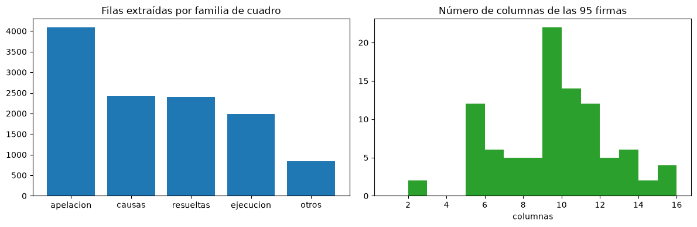
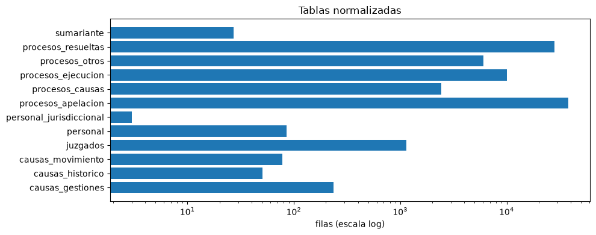
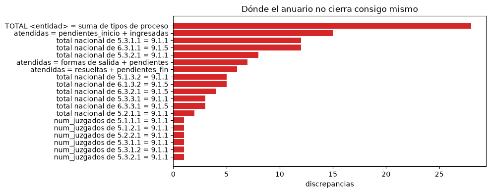

Cómo se hizo · 05
El pipeline, notebook por notebook
Todo el código está en notebooks de Jupyter, guardados ya ejecutados: se pueden leer con sus tablas y gráficos sin correr nada. Son trece pasos numerados y once módulos de apoyo. Esta página explica qué hace cada uno.
Cómo está armado el código
Pasos y módulos
Los pasos (notebooks/01_… a 13_…) hacen el trabajo: leen algo, lo transforman y escriben un archivo. Los módulos (notebooks/modulos/) solo definen constantes y funciones que varios pasos comparten. Cada paso empieza cargando los módulos que necesita:
%run -i modulos/comun.ipynb
%run -i modulos/geografia.ipynb%run -i ejecuta el notebook del módulo dentro del mismo espacio de nombres: después de esa línea, las funciones del módulo se usan directamente, como si estuvieran escritas en el paso.
Cada paso lee archivos y escribe archivos
No hay estado compartido en memoria entre pasos: todo pasa por data/. Por eso se puede mirar el resultado de un paso antes de seguir, y los intermedios (data/interim/crudo_*.csv) son la evidencia de qué salió del PDF antes de interpretarlo.
El orden
El 07 lleva ese número porque se escribió después, pero es un extractor como el 03 y corre antes del 04. El orden de ejecución es:
01 → 02 → 03 → 07 → 04 → 05 → 06 → 08 → 09 → 10 → 11 → 12 → 13 └──── necesitan el PDF ────┘ └── solo leen data/processed/ ──┘
Del 08 en adelante no hace falta el PDF: la integración y el EDA leen las tablas versionadas en data/processed/.
El estilo del código
El código es deliberadamente simple: bucles for en lugar de construcciones compactas, funciones cortas, sin clases, nombres en español. Se priorizó que cualquiera pueda seguirlo línea por línea. Al pasar de scripts a notebooks, cada paso se verificó reproduciendo byte a byte los archivos del pipeline original.
Mapa de entradas y salidas
data/raw/anuario_2023.pdf
│
01_diagnostico ........ (no escribe: solo reporta)
02_inventario ......... interim/catalogo_cuadros.csv
03_extraccion ......... interim/crudo_9_1_*, crudo_4_1_juzgados, crudo_13_1_*, crudo_14_1_*,
│ crudo_p746_*, columnas_4_1_encabezados, filas_complementarias,
│ problemas_extraccion
07_extraccion_procesos interim/crudo_procesos_{causas,resueltas,apelacion,ejecucion,otros},
│ firmas_procesos, problemas_extraccion_procesos
04_normalizacion ...... interim/norm_*.csv, equivalencias_candidatas, problemas_normalizacion
05_validacion ......... interim/discrepancias.csv + 6 archivos de validación
06_export ............. processed/*.csv + *.parquet, diccionarios, processed/auditoria/
08_integracion_interna processed/analitico/ (5 tablas + diccionario), 2 validaciones
09_nulos_estados ...... curated/eda/matriz_nulos_clasificada, resumen_dinamica_procesal
10_indicadores ........ curated/features/dataset_analitico_indicadores, eda/resumen_indicadores_materia
11_outliers ........... curated/features/dataset_analitico_curado, eda/resumen_outliers_estratificado
12_reporte_eda ........ reports/tables/*.csv, reports/figures/*.png
13_verificacion ....... (no escribe: verifica todo lo anterior)
Los módulos
| Módulo | Qué contiene | Lo usan |
|---|---|---|
comun | Rutas del proyecto (RAIZ, INTERIM, PROCESSED…). Lectura del PDF: paginas() devuelve el texto de cada página y lo guarda en data/interim/texto_crudo.txt para no releer el PDF; es_ruido() reconoce membretes y pies; palabras_bbox(), bloques_bbox(), celdas_bbox() devuelven palabras, líneas y bloques con coordenadas; agrupar_por_y() y agrupar_por_x() arman filas y columnas desde coordenadas. | todos |
geografia | Tablas cerradas ciudad → departamento y distrito → departamento, ciudades y distritos inequívocos, los 12 alias de total verificados. normalizar_geografia() compara sin tildes ni mayúsculas; ambito_de_contexto() decide capital o provincia desde el título de la página. | 04, 05, 07, 08, 13 |
materias | La errata INSTRUCCÓN, el mapa cerrado de las 11 equivalencias de materia, prefijos de instancia, rótulos de total. describir_materia() produce las tres versiones de la materia. | 04, 13 |
juzgados | Las 130 decisiones de encabezado de los cuadros 4.1.x y la jerarquía de las 37 filas de 4.1.1, transcriptas de la auditoría. Dos correcciones de rótulos truncados. | 03, 04, 05, 13 |
procesos | Las entidades (10 capitales, 9 provincias, TOTAL NACIONAL) y LAYOUTS_PROCESOS: el orden y el nombre de las columnas de cada una de las 95 firmas de tabla de los capítulos 5 y 6. Mapas de materia por sección y de grupos de proceso. | 04, 05, 07 |
contexto_procesos | El inventario cerrado de los 95 cuadros y las reglas de etapa_proceso_fuente y contexto_accion_penal. Falla ante un cuadro desconocido. | 04, 05, 13 |
correcciones_tipo_proceso | Las 87 reglas de corrección de rótulos de tipo de proceso, cada una con tabla, cuadros, páginas, literal y cantidad esperada de filas. | 04, 05, 13 |
diccionario | La descripción de cada tabla, columna y valor. Es la fuente del diccionario de datos. | 06 |
nulos | Clasificación de columnas por causa de ausencia y de filas por estado de gestión. | 09, 10 |
metricas | Las fórmulas de los indicadores y la verificación de la identidad de ingresos. | 10 |
outliers | IQR estratificado, winsorización y log(1 + x). | 11 |
Fase 1 — El ETL
Extraer el dato del PDF sin interpretarlo. Si una celda es ambigua queda vacía y se anota; si el Anuario se contradice, se registra.
01 · Diagnóstico
Lee: el PDF. Escribe: nada. Para qué: verificar los supuestos antes de escribir un solo parser.
- Metadatos con
pdfinfo: 774 páginas. - Que haya capa de texto: más de 100.000 caracteres extraídos → no hace falta OCR.
- Qué páginas vuelven casi vacías (menos de 60 caracteres): las 10 de mapas.
- Cuántas páginas dicen «Cuadro Nro.» y cuántas «Gráfica Nro.», y que no haya páginas con ambos.
- Muestras del texto crudo de las páginas 673 (cuadro 9.1.1) y 737 (13.1.1).

02 · Inventario
Lee: el PDF. Escribe: catalogo_cuadros.csv, una fila por página.
Clasifica cada página como cuadro, gráfica, vacía o sin etiqueta, reconociendo las cinco variantes de «Cuadro Nro.». Captura el número de cuadro, la sección (línea anterior a la etiqueta) y el título (hasta cuatro líneas siguientes, antes de la grilla de números). Después recorre las páginas en orden y agrupa las consecutivas con el mismo número: orden_pagina, paginas_del_cuadro y rango_paginas dicen que 5.1.1.1 ocupa 121–131. Con este catálogo se decidió qué extraer.

03 · Extracción de los cuadros 9.1, 13.1, 14.1 y 4.1
Lee: el texto del PDF y sus coordenadas. Escribe: los crudo_*.csv, con todos los valores como texto. La conversión a número se hace en el 04, para que el punto de miles no se pierda acá.
| Familia | Técnica | Lo particular |
|---|---|---|
| 9.1 movimiento (6 cuadros) | por tokens | si una fila trae más valores que las columnas declaradas, las sobrantes se llaman col_sin_rotulo_N; si trae menos, se anota como problema y no entra |
| 9.1 gestiones (3) | por posición | 5 años × (cantidad, porcentaje) = 10 columnas; las filas huecas se asignan por posición y los años vacíos quedan nulos |
| 9.1 histórico (3) | por tokens | solo las filas que empiezan con un año; un «>» pegado a una celda del 9.1.8 se limpia y se registra |
| 13.1 sumariante (3) | por tokens | un rótulo partido en líneas (DIRECCION ADMINISTRATIVA / FINANCIERA) se reconstruye con los fragmentos de alrededor |
| 14.1 personal (3) | por posición | el distrito es una celda combinada centrada: se asigna a todo el bloque hasta el SUB TOTAL; la tabla sin número de la p. 746 se corta y se extrae aparte |
| 4.1 juzgados (10) | por coordenadas | las columnas salen como col_NN; las llamadas a nota al pie se excluyen del cálculo de columnas pero quedan en el rótulo; la provincia se asigna por cercanía vertical |
Además guarda filas_complementarias.csv (filas reales del cuadro que están en otra unidad, como «VARIACIÓN ABSOLUTA», que no se mezclan con los datos pero tampoco se tiran) y problemas_extraccion.csv (69 registros, 63 de ellos avisos de columnas sin rótulo).

07 · Extracción de los capítulos 5 y 6
Lee: el catálogo y las 525 páginas, con coordenadas. Escribe: crudo_procesos_{familia}.csv, firmas_procesos.csv y problemas_extraccion_procesos.csv (vacío de problemas sin resolver).
Es el paso más complejo. Por cada página:
- Separa el texto vertical (etiquetas de grupo y rótulos de columna rotados) del horizontal, palabra por palabra.
- Separa los números de los textos; los números que son parte de un rótulo («Art. 207») se quedan en el rótulo.
- Arma las filas desde los números, agrupándolos por altura, y vuelve a pegar las filas que la altura partió en dos.
- Le asigna a cada fila su rótulo: el bloque de texto que la toca, o la línea más cercana si el bloque toca varias.
- Encuentra dónde empieza la tabla (la primera fila que es una ciudad o distrito) y clasifica cada fila: encabezado, entidad (cabecera «SUCRE 14»), datos o suelta.
- Calcula la firma de encabezado: las palabras de la banda de encabezado, normalizadas y ordenadas. Dos páginas con la misma firma son la misma tabla.
Después agrupa las páginas por firma (95 firmas), busca el nombre de sus columnas en LAYOUTS_PROCESOS y asigna cada número a su columna. Si una página resuelve otra cantidad de columnas que su formato, la alinea contra la página de referencia de la firma, corrigiendo el desplazamiento. Las etiquetas de grupo verticales se reparten entre las filas con programación dinámica. El resultado son 11.732 filas en cinco familias.
poppler 25 (el programa que trae pdftotext) descarta una «A» superpuesta en «HACIA LA ACCIÓN» del cuadro 5.3.2.1 (páginas 362 a 364) y deja «LA CCIÓN». Las versiones anteriores la conservaban. El notebook la restituye explícitamente en esas 10 filas, para que el resultado no dependa de la versión instalada. Sin eso, la regla de corrección R028 no encuentra sus filas y el paso 04 se detiene.

04 · Normalización
Lee: los crudos de 03 y 07. Escribe: norm_*.csv, equivalencias_candidatas.csv, problemas_normalizacion.csv.
- Texto a número con la convención boliviana:
texto_a_numero("86.285")da 86285 y"70,7%"da 70,7. Lo que no es un número limpio queda vacío y se anota; nunca se convierte en cero. Los conteos quedan como entero con vacíos (Int64): un número de juzgados no es 163,0. - Movimiento: la etiqueta de fila se abre en
ciudad,departamentoo materia según el eje; las filas de total no son ninguna de las tres. - Materias:
materia_cruda,materia_norm(solo la errata),materia_homologada(las 11 equivalencias),instancia_derivada,tipo_fila_derivado,errata_corregida. - Juzgados: a formato largo, con número de fila dentro del cuadro (4.1.1 tiene dos filas «Penal»), la interpretación auditada de cada columna y la jerarquía de 4.1.1. Si aparece una combinación no auditada o un rótulo distinto del esperado, se detiene.
- Tipos de proceso: la materia desde la numeración del cuadro, afinada por el tipo de acción penal;
ciudadodistritosegún el ámbito; el grupo de proceso contra la lista cerrada; el contexto auditado (etapa y acción penal) y las 87 correcciones de rótulo. Causas queda ancha; las otras cuatro pasan a formato largo con el rótulo literal de cada columna. - Equivalencias candidatas: una lista de nombres de materia que se parecen, para revisión humana. No se aplica: la decisión la tomó la auditoría de materias.

05 · Validación
Lee: los norm_*.csv y las decisiones de auditoría. Escribe: discrepancias.csv y seis archivos de validación.
Verifica doce identidades contables que el Anuario debería cumplir y registra cada incumplimiento con su cuadro y página: 117 discrepancias, ninguna corregida. Además corre controles técnicos (geografía, juzgados, contexto y correcciones de tipo de proceso) que sí detienen el pipeline si fallan: esos son errores del código, no de la fuente. Todo el detalle en validación y discrepancias.

06 · Exportación
Lee: los norm_*.csv. Escribe: las 12 tablas en CSV y Parquet, diccionario_de_datos.csv, diccionario_de_valores.csv y copia a processed/auditoria/ los registros de extracción y validación.
Fija los tipos finales (enteros, decimales, booleanos) y verifica que toda columna exportada esté descrita en el módulo diccionario; si falta una, se detiene. Es lo que mantiene el diccionario sincronizado con los datos.
Fase 2 — Integración
Las seis auditorías de la Fase 2 no son notebooks: son decisiones tomadas contra el PDF, publicadas como CSV en auditoria/ y codificadas en los módulos. Ver las seis auditorías. El notebook de esta fase es el 08.
08 · Integración interna
Lee: los 12 Parquet y las auditorías. Escribe: processed/analitico/ (5 tablas y su diccionario) y dos validaciones.
- Guarda la huella SHA-256 de los 24 archivos originales para comprobar al final que no se tocaron.
- Arma los recursos judiciales por territorio (19 claves): en capitales suma solo las hojas de la jerarquía de 4.1.1; en provincias toma la fila TOTALES de cada cuadro, después de verificar que sus 119 columnas cierran.
- Selecciona el personal por distrito: las 9 filas del 14.1.3.
- Construye la tabla principal: las 1.997 filas de detalle territorial de
causas_por_tipo_proceso, conterritorioytipo_elemento_analitico(proceso, acción penal u otro detalle). - Le une recursos y personal con uniones N:1 verificadas: siguen siendo 1.997 filas.
- Apila las cuatro tablas largas en
metricas_tipo_proceso_longy mide, sin hacerla, cuánto multiplicaría la principal unirlas (×29,8). - Cruza movimiento y gestión 2023 por materia (32 parejas y 24 sin pareja).
- Exporta, comprueba que CSV y Parquet dicen lo mismo, escribe el diccionario analítico y corre 25 controles.

Fase 3 — EDA
Calcular y describir. Ninguno de estos notebooks borra o modifica una columna existente: solo agregan.
09 · Nulos y estado de gestión
Clasifica las 87 columnas por la causa de sus vacíos (por materia, geografía, recursos, tipo de fila) y cada proceso por cómo cerró el año. Controla atendidas = resueltas + pendientes_fin. Agrega estado_gestion.

10 · Indicadores de congestión
Calcula los indicadores y las banderas. Antes, verifica que la suma de las formas de ingreso reproduzca atendidas − pendientes_inicio en todos los procesos: si no, se detiene. Agrega 12 columnas.

11 · Outliers
Detecta valores extremos con IQR dentro de cada estrato materia × ámbito, winsoriza las tasas y agrega logaritmos. Verifica con Spearman que las transformaciones conservan el orden. Agrega 15 columnas.

12 · Reporte
Resume por departamento, materia y ámbito, arma el top 20 de procesos con más stock pendiente y produce las figuras del reporte. Los resultados están en EDA e indicadores.
13 · Verificación final
Siete bloques de comprobaciones independientes sobre todo lo que produjeron los pasos anteriores. Cada una es un assert: si algo no se cumple, el notebook se detiene y dice qué. Ver validación.